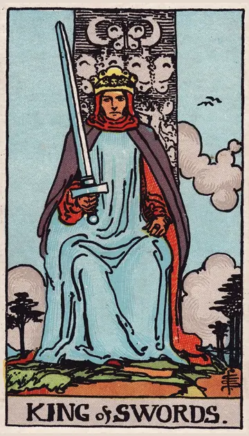

正位置ソードのキングの正位置
キーワード：判断力・公正・知的なリーダー
恋愛
理性的に、将来を見据えた判断ができる時です。
相手の気持ちあなたとの関係を、真剣に考えているようです。
この先誠実で安定した関係に、進みそうです。
アドバイス気持ちと現実の両方を見て、判断しましょう。
気をつけること理屈だけで、相手の気持ちを判断しないように。
この先誠実で安定した関係に、進みそうです。
アドバイス気持ちと現実の両方を見て、判断しましょう。
気をつけること理屈だけで、相手の気持ちを判断しないように。
人間関係
公正な態度で、信頼を集める時です。
相手の気持ちあなたのことを、信頼できる人だと感じているようです。
この先頼れる存在として、周りの信頼が深まりそうです。
アドバイス感情的な場面でも、公平さを保ちましょう。
気をつけること厳しすぎる態度で、人を遠ざけないように。
この先頼れる存在として、周りの信頼が深まりそうです。
アドバイス感情的な場面でも、公平さを保ちましょう。
気をつけること厳しすぎる態度で、人を遠ざけないように。
仕事・学業
論理的な判断で、周りを導ける時期です。
この先的確な判断が、大きな成果につながりそうです。
アドバイス根拠をもとに、はっきりと方針を示しましょう。
気をつけること融通がきかなくならないように。
アドバイス根拠をもとに、はっきりと方針を示しましょう。
気をつけること融通がきかなくならないように。
お金
お金について、論理的に判断できる時です。
この先的確な判断が、成果につながりそうです。
アドバイス根拠をもとに、お金の計画を立てましょう。
気をつけること融通がきかなくならないように。
アドバイス根拠をもとに、お金の計画を立てましょう。
気をつけること融通がきかなくならないように。
生活
暮らしの方針を、筋道立てて決められる時です。
この先整った暮らしになりそうです。
アドバイス生活のルールを、はっきり決めましょう。
気をつけること理屈だけで、家族を説得しようとしないように。
アドバイス生活のルールを、はっきり決めましょう。
気をつけること理屈だけで、家族を説得しようとしないように。
今日の運勢
的確な判断ができる日です。
この先物事がスムーズに決まりそうです。
アドバイス大事なことは、筋道を立てて考えましょう。
気をつけること冷たい言い方にならないように。
アドバイス大事なことは、筋道を立てて考えましょう。
気をつけること冷たい言い方にならないように。
逆位置ソードのキングの逆位置
キーワード：冷たい判断・独断・理屈っぽさ
恋愛
理屈を優先して、気持ちを置き去りにしやすい時です。
相手の気持ちあなたとの関係を、頭で考えすぎているようです。
この先柔軟になれば、関係がうまくいきそうです。
アドバイス正しさより、相手の気持ちを優先してみましょう。
気をつけること言葉で、相手を支配しないように。
この先柔軟になれば、関係がうまくいきそうです。
アドバイス正しさより、相手の気持ちを優先してみましょう。
気をつけること言葉で、相手を支配しないように。
人間関係
厳しさが、冷たさに変わりやすい時です。
相手の気持ちあなたに、厳しく接してしまっているのかもしれません。
この先歩み寄れば、信頼を取り戻せそうです。
アドバイス相手の話を、最後まで聞きましょう。
気をつけること相手を論破しようとしないように。
この先歩み寄れば、信頼を取り戻せそうです。
アドバイス相手の話を、最後まで聞きましょう。
気をつけること相手を論破しようとしないように。
仕事・学業
独断で決めて、反発を招きやすい時期です。
この先意見を取り入れれば、良い判断ができそうです。
アドバイス周りの意見を取り入れて、判断しましょう。
気をつけること権限を振りかざさないように。
アドバイス周りの意見を取り入れて、判断しましょう。
気をつけること権限を振りかざさないように。
お金
お金の判断が、独りよがりになりやすい時です。
この先見直せば、良い判断ができそうです。
アドバイス人の意見も、取り入れましょう。
気をつけること強引に進めないように。
アドバイス人の意見も、取り入れましょう。
気をつけること強引に進めないように。
生活
理屈を優先して、暮らしがぎくしゃくしやすい時です。
この先柔軟になれば、うまくいきそうです。
アドバイス周りの気持ちにも、耳を傾けましょう。
気をつけること自分の考えだけが正しいと思わないように。
アドバイス周りの気持ちにも、耳を傾けましょう。
気をつけること自分の考えだけが正しいと思わないように。
今日の運勢
頭でっかちになりやすい日です。
この先気持ちに余裕が生まれそうです。
アドバイス理屈を離れて、楽しむ時間をつくりましょう。
気をつけること自分の考えだけが正しいと思わないように。
アドバイス理屈を離れて、楽しむ時間をつくりましょう。
気をつけること自分の考えだけが正しいと思わないように。
このページの文章は、アプリ「ひとやすみタロット」の結果に使っている文章です。アプリでは、あなたの相談や、カードが出た位置（今の状況・これからの流れ・アドバイス）に合わせて、この中から文章を選びます。逆位置の読み方は逆位置のことをご覧ください。
「ソードのキング」が出たら、あなたの相談ではどう読む？
アプリでは、質問への答えに合わせて、カードの言葉をあなたの相談に合わせて届けます。
Android 対応・会員登録なし